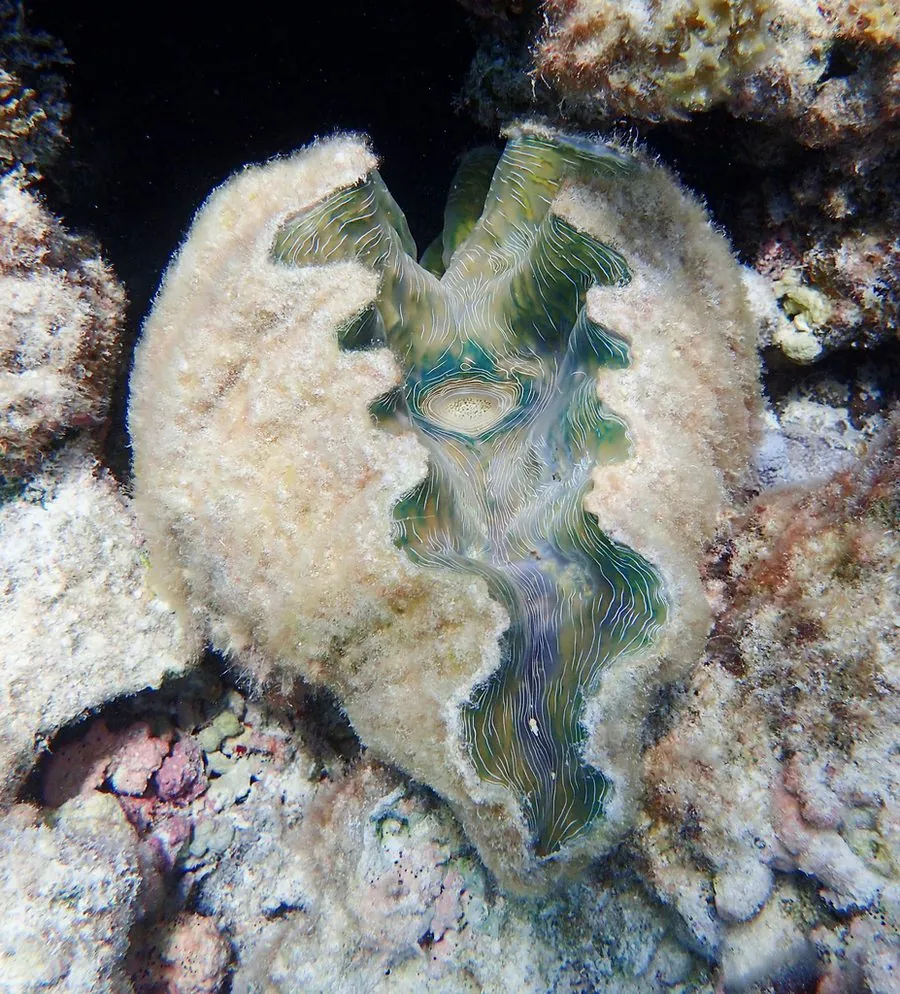

软体动物 · 动物界
砗蚝 Hippopus hippopus

壳形如马蹄、壳面有粗大鳞片的砗蚝，栖于热带珊瑚礁浅滩，体内共生虫黄藻，被列入国际公约附录二。
- 分类
- 门软体动物门纲双壳纲目帘蛤目科砗磲科属砗蚝属
- 栖息环境
- 热带珊瑚礁礁坪与潟湖沙底浅水区
- 地理分布
- 印度洋至西太平洋热带海域，东南亚至澳大利亚北部
- 保护级别
- 列入《濒危野生动植物种国际贸易公约》附录二，贸易受管制
物种志
砗蚝的壳长可达四十厘米，壳形厚重，侧面看像一只马蹄，壳面灰白至淡黄色，有粗大的鳞片和波状纵褶。两壳等大，壳缘呈波浪状，铰合部有足丝孔。外套膜内共生着大量的虫黄藻，使它的组织呈现黄褐至墨绿色，这些单细胞藻类通过光合作用为它提供养分，它则提供庇护与二氧化碳。
它分布于印度洋至西太平洋的热带珊瑚礁，从东南亚到澳大利亚北部、密克罗尼西亚都有，栖息在礁坪、潟湖浅滩的沙底，成体固着不动，靠滤食和共生藻类获取营养。它生长缓慢，寿命可达数十年，繁殖需要较大的种群密度。由于过度捕捞和珊瑚礁退化，砗蚝数量明显下降，全部砗磲科物种都被列入《濒危野生动植物种国际贸易公约》附录二，国际贸易受到严格管制。
形态与习性
- 壳长可达四十厘米，壳形如马蹄
- 壳面灰白至淡黄，具粗大鳞片与波状褶
- 共生外套膜内共生虫黄藻，靠光合作用供能
- 食性滤食加共生藻类营养
- 生长缓慢，寿命可达数十年
- 保护国际公约附录二，国际贸易受管制
趣味知识
- 它体内养着一群微型藻类，白天藻类晒太阳造养分，它自己坐享其成。
- 壳侧看像马蹄，砗蚝这个名字就是从形状来的。
- 它长得极慢，长到四十厘米可能要用掉几十年。